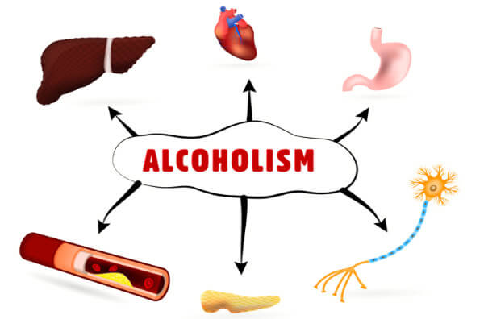

Що відбувається, коли алкоголь потрапляє до організму
У організмі постійно міститься невелика кількість етилового спирту, що утворюється на проміжкових етапах обміну вуглеводів, або внаслідок бродильних процесів у травному тракті. Концентрація його у крові не перевищує 0,1-0,3 г/л. Невелика кількість етанолу, що надходить до крові у результаті вказаних процесів, не є небезпечною, оскільки швидко знешкоджується ферментними системами печінки та інших тканин.
Інакше проходять реакції при надходженні до організму великих доз алкоголю із зовнішнього середовища. Алкоголь швидко всотується слизовою оболонкою порожнини роту, шлунку та кишечнику. У шлунку всотується близько 20% прийнятого алкоголю та біля 80% - у тонкому кишечнику. Після споживання алкоголю натщесерце його максимальна концентрація спостерігається через 30-60 хвилин. Після споживання їжі концентрація алкоголю у крові зростає повільніше, тому її максимум спостерігається після 1,5-2 годин. При цьому, частина алкоголю (до 30%) зв'язується з їжею та не потрапляє у кров. Вільний алкоголь повністю зникає з організму після 5-15 годин після споживання. Найбільша кількість поглинутого етанолу концентрується у головному мозку та печінці, менша — в інших органах (легені, нирки, м'язи, тощо).
...
Корисний вплив алкоголю
Після споживання алкоголь концентрується у мозку (концентрація етилового спирту у мозку виходить у 1,75 разів більша, ніж у крові). Після концентрації, алкоголь чинить на мозок наступну дію:
- Зменшує збудженість нервових клітин — заспокійлива дія.
- Покращує настрій, викликає стан ейфорії.
Отож, під впливом алкоголю людина розслабляється, хоче веселитись. Це є основною причиною вживання людьми алкогольних напоїв. Звісно, споживання алкоголю призводить до безлічі негативних наслідків, проте:
- Невеликі порції алкоголю є доступним та поширеним засобом для зняття нервових перевантажень, втоми та скутості при спілкуванні.
- Регулярні медичні дослідження стверджують, що помірні порції алкоголю мають позитивний вплив на діяльність серцево-судинної системи, попереджують старече слабоумство, імпотенцію, тощо.
Шкідливий вплив алкоголю
Алкоголь — отрута, що знищує клітини (цим обумовлюється оброблення спиртом порізів та ран, щоб вбити мікроби). Етиловий спирт накопичується в мозку та печінці (якщо прийняти стандартний вміст спирту у крові за 1, то в печінці дорівнюватиме 1,5, а в мозку — 1,75) — відповідно, у першу чергу вбиваючи клітини у цих органах. Концентрація етанолу, після якої клітини мозку починають відмирати, досягається після споживання понад усього 20 мл етилового спирту чоловіками та 10 мл жінками. Відповідно, після споживання від 20 мл етилового спирту, розслаблюючий вплив алкоголю стає вираженим, але клітини печінки і мозку ще не гинуть — так стверджують особи, коли говорять про можливості так званої помірного споживання алкоголю.
